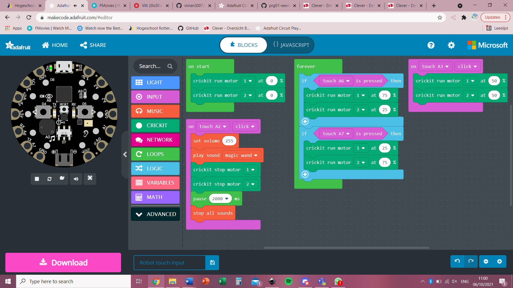
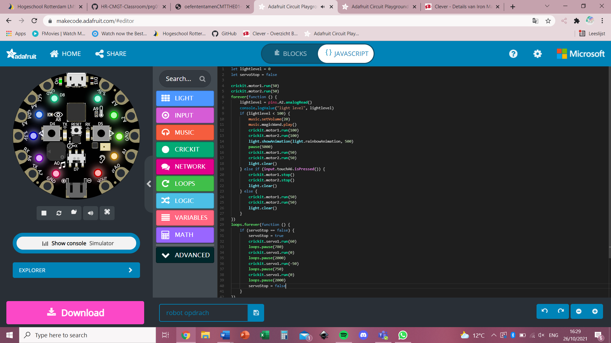

Pushy robots
For CLE1 (Contextual Learning Environment 1), we had to make a pushy robot. This is a robot that's going to fight in battles against other robots. We had to make a prototype first and after that, we made a casing from wood. In this onepager you can read all about my journey with this robot.
Pinky prototype
First, I made a prototype for Pinky the robot. I made this out of cardboard and colored paper. I called my robot Pinky, because she was mostly pink and it sounded very cute. My idea for the robot was that when other robots see her, she doesn't look very scary so it's easy to underestimate her in a fight. This gives her the element of surprise. Pinky can move straight ahead and to both sides and when you grab her tail, she stops moving. She has a small box on her back to send messages around, which is just a cute extra feature. Here are some pictures of Pinky.
Pinky the battlebot
After making the prototype, it was time for the real deal. I made some changes to the design. I added a light sensor, so when a robot pushes Pinky away from the front, she can push back at 100% speed. I found out that it's not very useful that Pinky could turn left or right, so I got rid of that feature. The tail is still there and when you grab it, Pinky stops moving. I made a wooden casing and made sure I could open it up again later on. That would be very useful to turn Pinky on and off without ruining her. I spraypainted the casing pink to make her look cool and I gave her a colored horn as well. The lid can open and close while she's moving and then you can see the colored lights in her belly. Overall, Pinky is a very cute but powerful battlebot.
Code
This is the code for prototype-Pinky. I made this code in MakeCode from Adafruit industries and I put it on the Circuit Playground Express (CPE). The CPE is the chip that makes sure Pinky does what I want her to do. I only used the touch sensors as input. I wrote it in blocks, because I didn't know Javascript yet.
This is the code for Pinky the battlebot. This time I was able to make it in Javascript and that was a lot easier and there were also more options. I worked with the light sensor and the touch sensor as input.